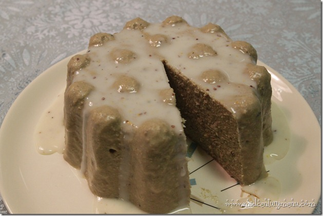

Liver Pate en Masque

Description:
Just so we're clear, this is liver, inside gelatin. My disgust is
immeasurable. This recipe comes from a Weight Watchers recipe card, so you know,
it's healthy!
This is the second recipe on Upsetting Recipes that claims
gelatin is somehow good for you. I don't understand how we, as a species, have
evolved to create the internet, and yet somehow also Liver Pate en Masque.
Also, I just need to point out this insane detail: this loaf of liver is glazed
four or five separate times. This is an actual step in the recipe. This actually
takes up several steps.
Ingredients:
For the liver loaf
- 2 envelopes -- unflavoured gelatin
- 1 cup -- hot bouillon
- 1 pound -- cooked liver, cut up
- 2 cups -- drained, canned French-style green beans
- 1/4 cup -- buttermilk
- 2 tbsp -- parsley flakes
- 2 tbsp -- wine vinegar
- 2 tbsp -- mustard
- 2 tbsp -- brandy extract (optional)
- 2 tsp -- onion powder
- 1/2 tsp -- salt
- 1/8 tsp -- pepper
- 1/8 tsp -- thyme leaves
- 1/8 tsp -- nutmeg
- Glaze* (see instructions)
- Chicory to garnish
- Radish slices to garnish
For the glaze
- 1 envelope -- unflavoured gelatin
- 1/4 cup -- bouillon
- 1/4 cup -- buttermilk
- 1/2 tsp -- mustard
- 1/4 tsp -- onion salt
- pinch salt
- pinch pepper
- 1/4 tsp sugar OR artificial sweetener
Steps:
For the liver loaf
- Sprinkle gelatin over bouillon in blender container. Add remaining ingredients, except for glaze and garnishes.
- Process at medium speed, until mixture is smooth, like your brain will be after completing this recipe.
- Pour into 1-quart mold and chill until firm.
- Unmold and place on a flat serving dish or platter.
- Coat with glaze and chill until glaze is set. Use all the glaze.
- Now we reheat the glaze. Transfer excess glaze from platter to small pan.
- Place pan over a bowl of warm water and stir the glaze vigorously until syrupy.
- Spoon glaze over liver loaf 3 or 4 times (or until glaze is all used up), chilling the loaf after each coating to set the glaze layer.
- When the glaze is once again used up, garnish your artistic vision with chicory and radish slices.
For the glaze
- Sprinkle gelatin over bouillon in a small saucepan. Stir over low heat until gelatin dissolves.
- Remove from heat. Stir in buttermilk, mustard, onion salt, regular salt, and pepper. Let cool.
- Add sweetner and mix lightly. Chill until syrupy.
Serves 4 unholy family members.
Source: Mid-Century Menu